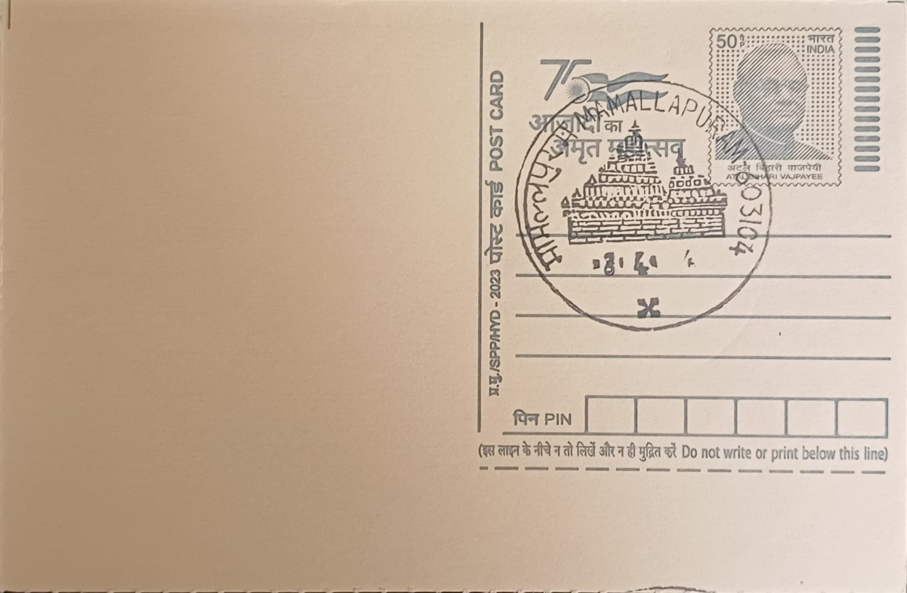
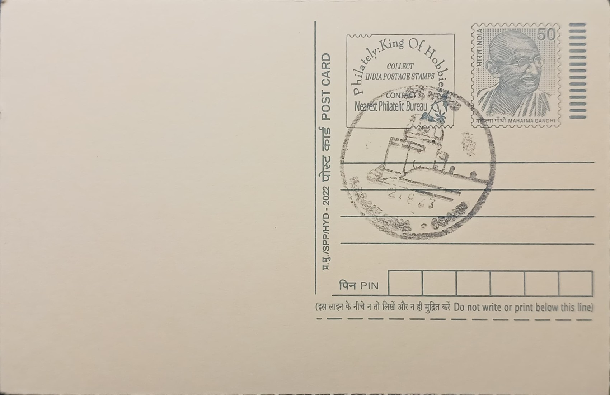
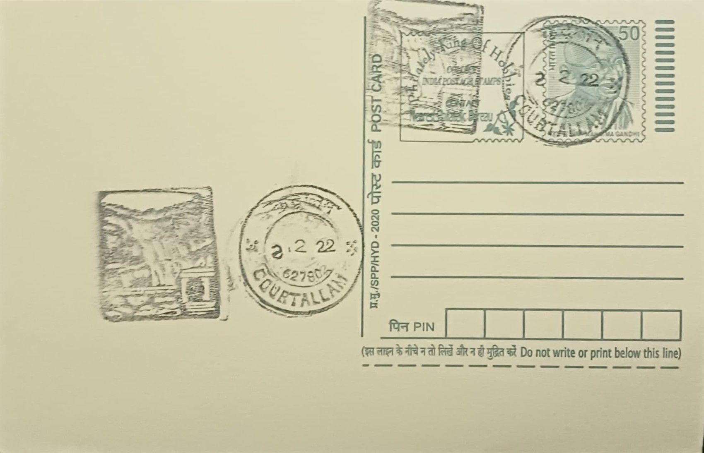
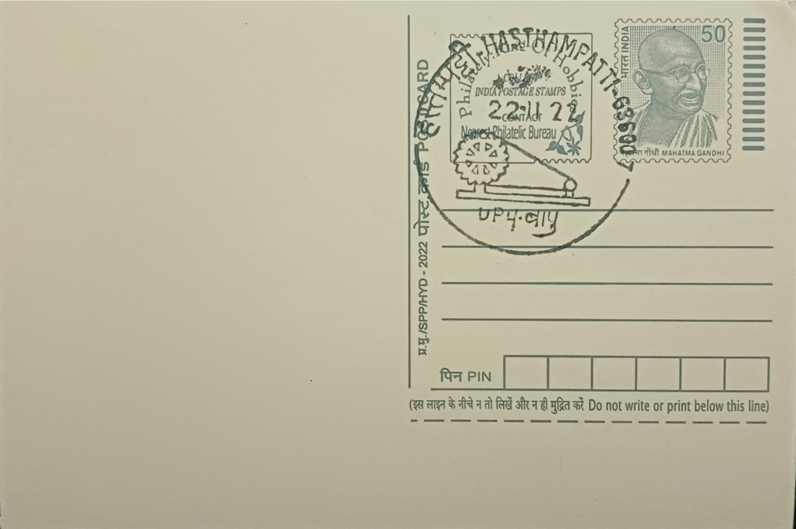
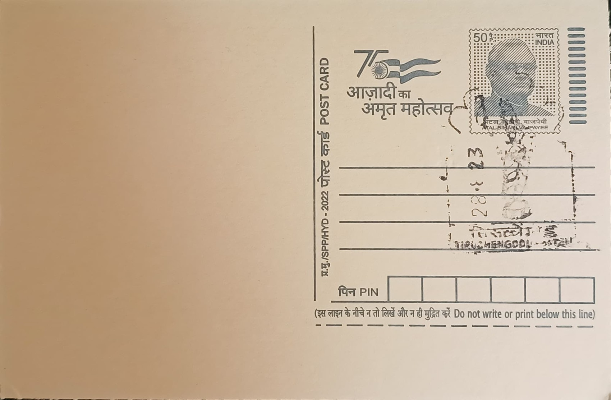
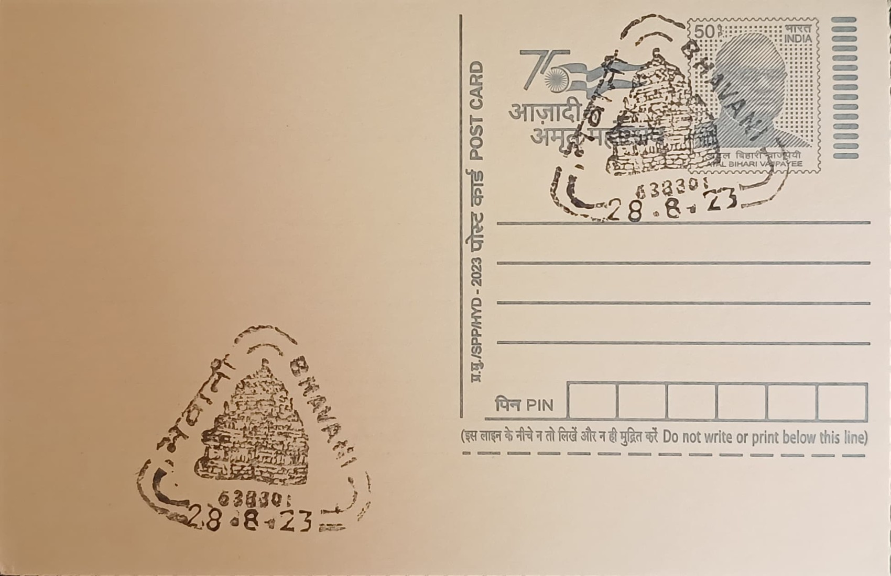
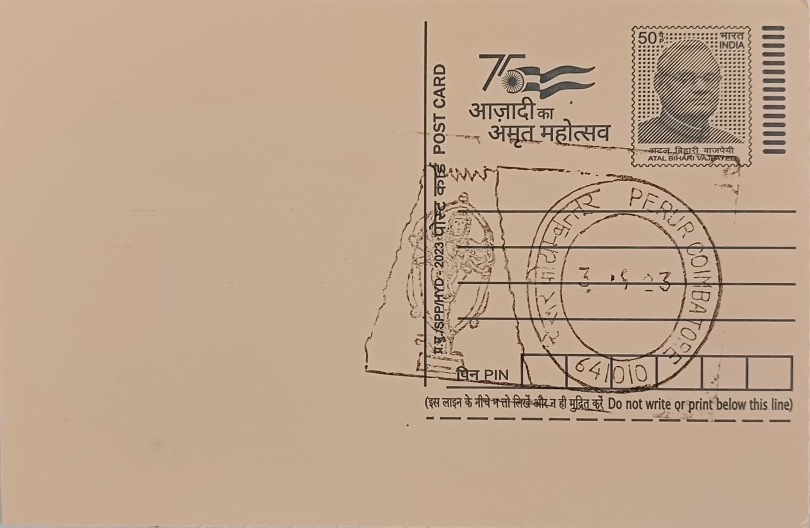

TAMIL NADU


{kind=link}


{kind=link}


{kind=link}


{kind=link}
{kind=link}
{kind=link}

{kind=link}


| S. NO. | PERMANENT PICTORIAL CANCELLATION | DATE OF INTRODUCTION | POST OFFICE AND RANK | DISTRICT | STATE/UT | PINCODE | IMAGE |
|---|---|---|---|---|---|---|---|
| 1 | Anna Road Post Office (Warwick Electric Theatre) | 31.03.1998 | Anna Road HO | Chennai | TAMIL NADU | 600002 | |
| 2 | Punnai Leaves and Peacock | 14.11.1979 | Mylapore HO | Chennai | TAMIL NADU | 600004 | |
| 3 | Pulicat Lighthouse | 21.08.2021 | Pulicat SO | Tiruvallur | TAMIL NADU | 601205 | |
| 4 | Shore Temple | 01.01.1965 | Mamallapuram SO | Chengalpattu | TAMIL NADU | 603104 |  |
| 5 | Painted Stork | 01.06.1996 | Vedanthangal BO | Kanchipuram | TAMIL NADU | 603314 | |
| 6 | Gingee Fort | 29.12.1979 | Gingee SO | Villupuram | TAMIL NADU | 604202 | |
| 7 | Oil Lamp | 12.12.1997 | Tiruvannamalai HO | Tiruvannamalai | TAMIL NADU | 606601 | |
| 8 | Logo of Sri Ramanasramam | 01.09.2014 | Sri Ramanasramam SO | Tiruvannamalai | TAMIL NADU | 606603 | |
| 9 | Sathya Gnana Sabha | 30.01.1999 | Vadalur SO | Cuddalore | TAMIL NADU | 607303 | |
| 10 | Thyagarajaswamy Temple Chariot | 14.10.1989 | Tiruvarur HO | Thiruvarur | TAMIL NADU | 610001 | |
| 11 | Dargah Sharif | 08.10.1976 | Nagore SO | Nagapattinam | TAMIL NADU | 611002 | |
| 12 | Shrine Basilica of Mother Mary | 29.11.1976 | Vailankanni SO | Nagapattinam | TAMIL NADU | 611111 | |
| 13 | Brihadeeswara Swamy Temple | 10.12.1974 | Thanjavur HO | Thanjavur | TAMIL NADU | 613001 | |
| 14 | Tambura and Kartal | 20.01.1976 | Thiruvaiyaru SO | Thanjavur | TAMIL NADU | 613204 | |
| 15 | Flamingo | 02.12.1977 | Kodikkarai SO | Nagapattinam | TAMIL NADU | 614807 | |
| 16 | Rock Fort | 17.12.1974 | Tiruchirappalli HO | Tiruchirappalli | TAMIL NADU | 620001 | |
| 17 | Adiseshan of Lord Ranganatha | 17.01.1981 | Srirangam HO | Tiruchirappalli | TAMIL NADU | 620006 | |
| 18 | Sri Ramanathaswamy Temple Corridor | 07.03.1978 | Rameswaram SO | Ramanathapuram | TAMIL NADU | 623526 | |
| 19 | Kodaikanal Observatory | 05.09.1979 | Kodaikanal SO | Dindigul | TAMIL NADU | 624101 |  |
| 20 | Vel (Spear) and Peacock Feather of Lord Murugan | 08.09.1978 | Palani HO | Dindigul | TAMIL NADU | 624601 | |
| 21 | Flag of Pandya Dynasty with Aquarius Emblem | 20.04.1978 | Madurai HO | Madurai | TAMIL NADU | 625001 | |
| 22 | Meenakshi Amman Temple | 28.04.2017 | Madurai Bazaar SO | Madurai | TAMIL NADU | 625001 | |
| 23 | Lion Tailed Macaque | 03.10.1978 | Kalakkad SO | Tirunelveli | TAMIL NADU | 627501 | |
| 24 | Courtallam Waterfalls | 01.08.1977 | Courtallam SO | Tenkasi | TAMIL NADU | 627802 |  |
| 25 | Manapad Lighthouse | 05.01.1977 | Manapad SO | Thoothukudi | TAMIL NADU | 628209 | |
| 26 | Mahakavi Subramanya Bharatiyar Face | 11.12.1991 | Ettayapuram SO | Thoothukudi | TAMIL NADU | 628902 | |
| 27 | Mahakavi Subramanya Bharatiyar Manimandapam | 11.12.1991 | Ettayapuram SO | Thoothukudi | TAMIL NADU | 628902 | |
| 28 | Muttom Lighthouse | 05.01.2017 | Muttom SO | Kanyakumari | TAMIL NADU | 629202 | |
| 29 | Vivekananda Rock Memorial | 21.11.1975 | Kanyakumari SO | Kanyakumari | TAMIL NADU | 629702 | |
| 30 | Chakravaha | 18.04.2023 | Kanchipuram HO | Kanchipuram | TAMIL NADU | 631501 | |
| 31 | Logo of CMC Hospital | 09.12.2014 | CMC Hospital, Vellore SO | Vellore | TAMIL NADU | 632004 | |
| 32 | Vellore Fort with Moat | 03.03.2017 | Vellore SO | Vellore | TAMIL NADU | 632004 | |
| 33 | Vainu Bappu Observatory | 05.12.1986 | Kavalur BO | Krishnagiri | TAMIL NADU | 635701 | |
| 34 | Gandhi Chakra and Bapu | 30.01.1997 | Hasthampatti SO | Salem | TAMIL NADU | 636007 |  |
| 35 | Lord Ardhanareeswar | 05.01.2017 | Tiruchengodu HO | Namakkal | TAMIL NADU | 637211 |  |
| 36 | Bhavani Koodal and Rajagopuram | 25.08.1977 | Bhavani HO | Erode | TAMIL NADU | 638301 |  |
| 37 | Logo of Tamil Nadu Agricultural University | 01.07.2019 | TNAU-Lawley Road SO | Coimbatore | TAMIL NADU | 641003 | |
| 38 | Patteeswarar Temple | 03.02.1976 | Perur, Coimbatore SO | Coimbatore | TAMIL NADU | 641010 |  |
| 39 | Salim Ali Centre fir Ornithology and Natural History (SACON) | 06.06.2019 | Anaikatti BO | Coimbatore | TAMIL NADU | 641108 | |
| 40 | Adi Yogi | 24.02.2017 | Ishana Vihar BO | Coimbatore | TAMIL NADU | 641114 | |
| 41 | Our Lady of Holy Rosary Shrine | 29.09.2017 | Karumathampatti SO | Coimbatore | TAMIL NADU | 641659 | |
| 42 | Nilgiri Tahr | 14.10.1980 | Top Slip BO | Coimbatore | TAMIL NADU | 642133 | |
| 43 | Toda Hut | 15.07.1994 | Udagamandalam HO | Nilgiris | TAMIL NADU | 643001 | |
| 44 | Nilgiri Mountain Train | 10.08.2019 | Coonoor Railway Station SO | Nilgiris | TAMIL NADU | 643102 | |
| 45 | Indian Bison (Gaur) | 05.04.1975 | Mudumalai Sanctuary BO | Nilgiris | TAMIL NADU | 643211 | |